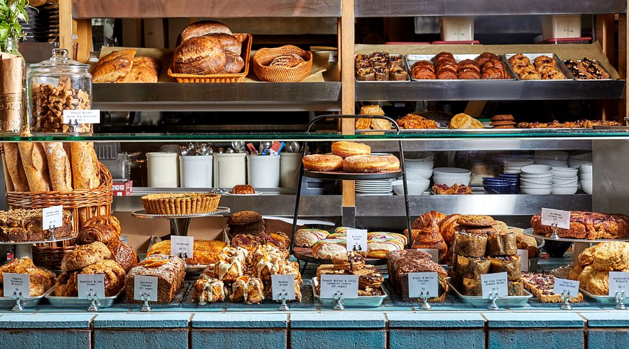
7:00 AM — Breakfast (choose 1)
- Eastern Market — pastry + coffee, quick Metro access. (Budget $)
- Union Station hall — grab-and-go, indoors if rainy. (Budget $)
- Hotel café near the Mall — sit-down start. (Mid $$)
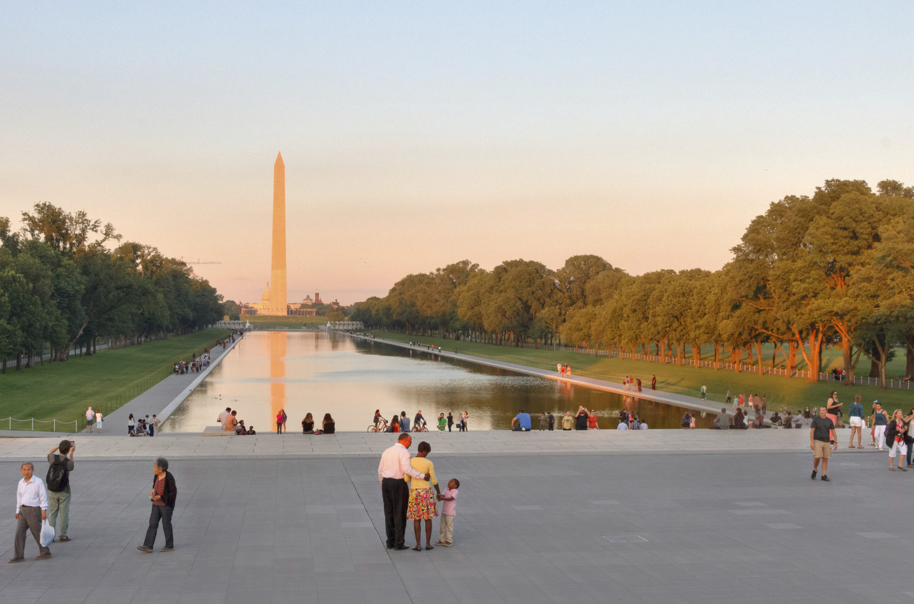
9:00 AM — Mall Walk (Capitol → WWII → Lincoln)
- Easy ~2 miles with classic views.
- Photo stops at the Reflecting Pool and memorials.
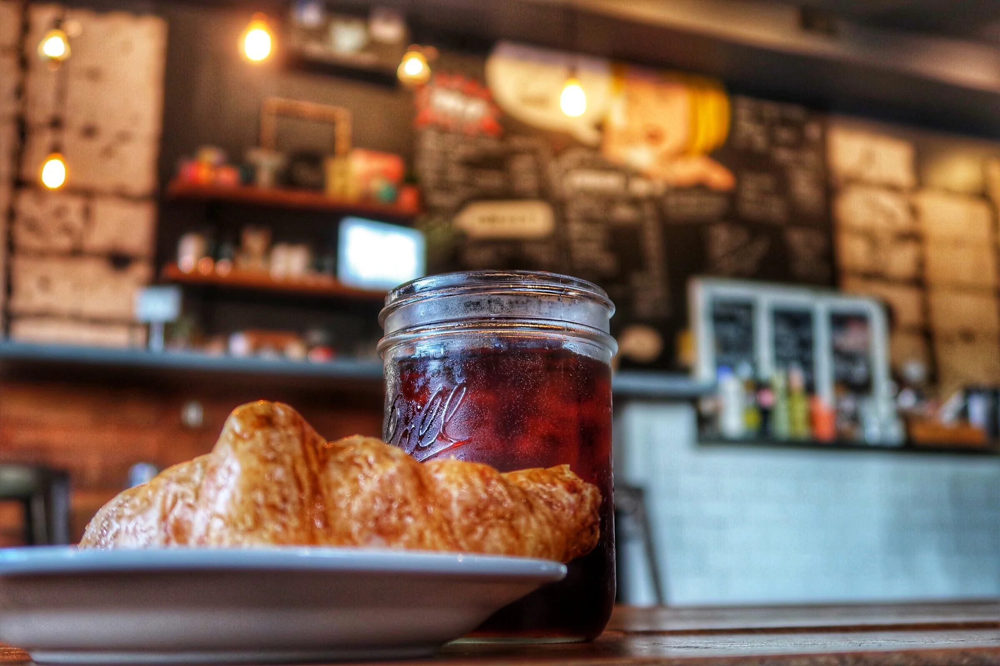
10:30 AM — Coffee / Snack window
- Museum café near your first stop. (Mid $$)
- Food truck on the Mall (weekends/warmer). (Budget $)
- Gallery coffee bar (quiet, indoors). (Mid $$)
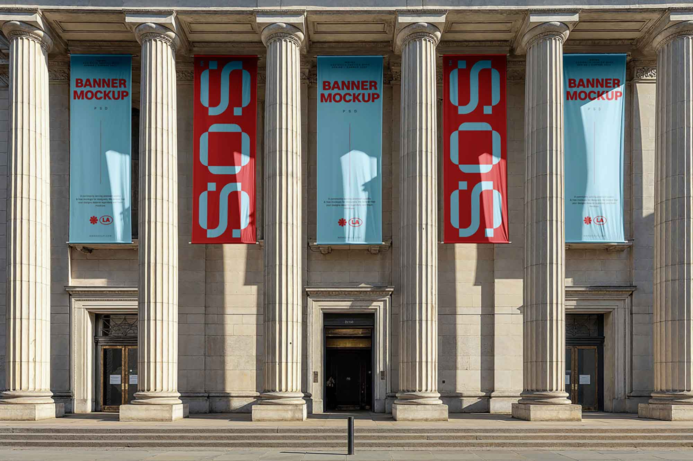
11:00 AM — Museum (pick 1)
- Air & Space — Apollo, early flight; timed entry often required. (Free)
- National Gallery of Art — West/East buildings + Sculpture Garden. (Free)
- Tip: If lines are long, swap with the 3:00 PM slot.
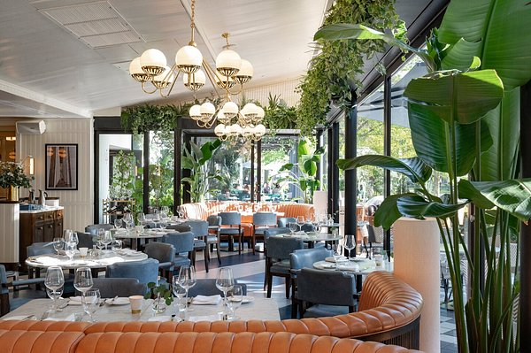
12:30 PM — Lunch window (choose 1 area)
- Union Market — many stalls; fast seating. (Budget–Mid $–$$)
- Penn Quarter/Chinatown — sit-down near the Mall. (Mid–Higher $$–$$$)
- Food trucks on the Mall — quick and outdoors. (Budget $)
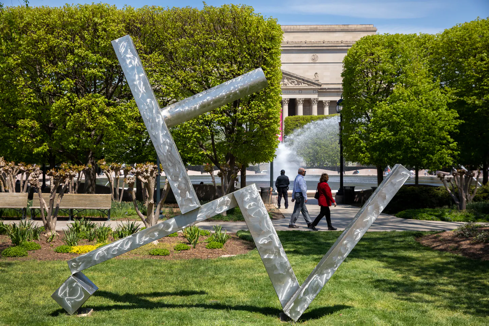
2:00 PM — Optional add-on (choose 1)
- Museum #2 (short visit).
- Library of Congress tour (if slots available).
- Sculpture Garden (seasonal rink/fountain).
3:00 PM — Neighborhood stroll (pick 1)
- Georgetown Canal path + brick streets + indie shops.
- Capitol Hill rowhouses — colorful streets + local cafés.
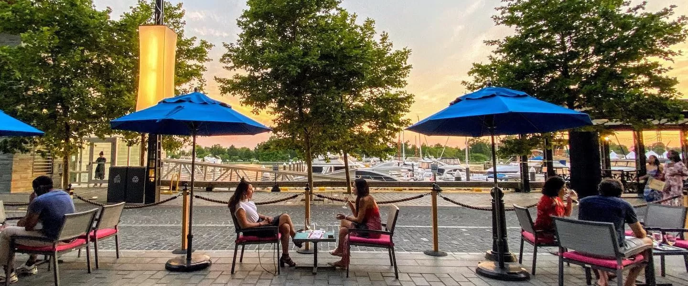
5:30 PM — Happy hour / Snack window
- Waterfront patio (Georgetown or Wharf).
- Gallery Place — close to evening museums.
- Hotel lounge (weather backup).
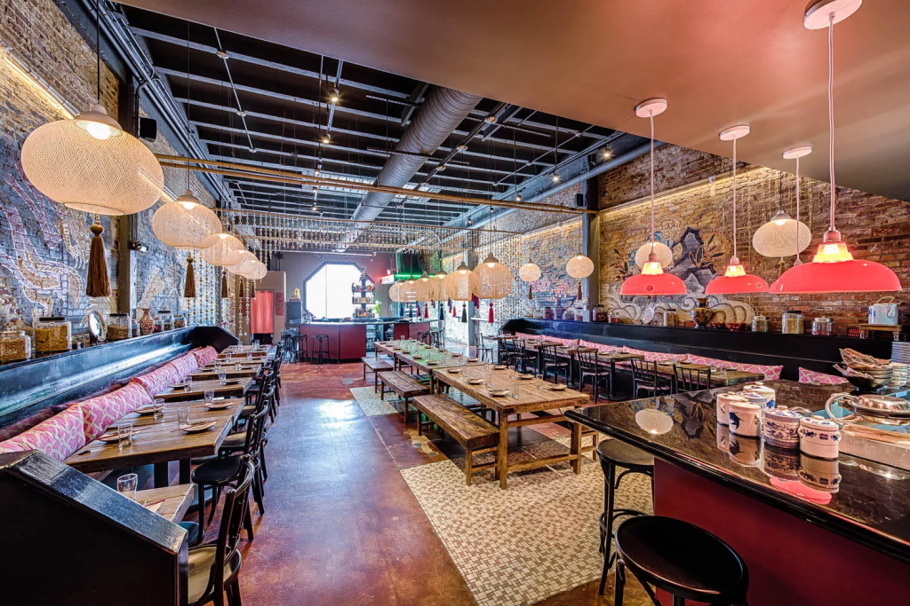
6:30 PM — Dinner (choose by vibe)
- Fast-casual near the Mall. (Budget $)
- Penn Quarter bistro. (Mid $$)
- Rooftop or view restaurant. (Higher $$–$$$; reserve ahead.)
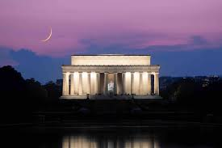
8:00 PM — Monuments at night
- Lincoln → MLK → Tidal Basin loop. Fewer crowds, best lighting.
- Safety: stay on lit paths; rideshare back if tired.
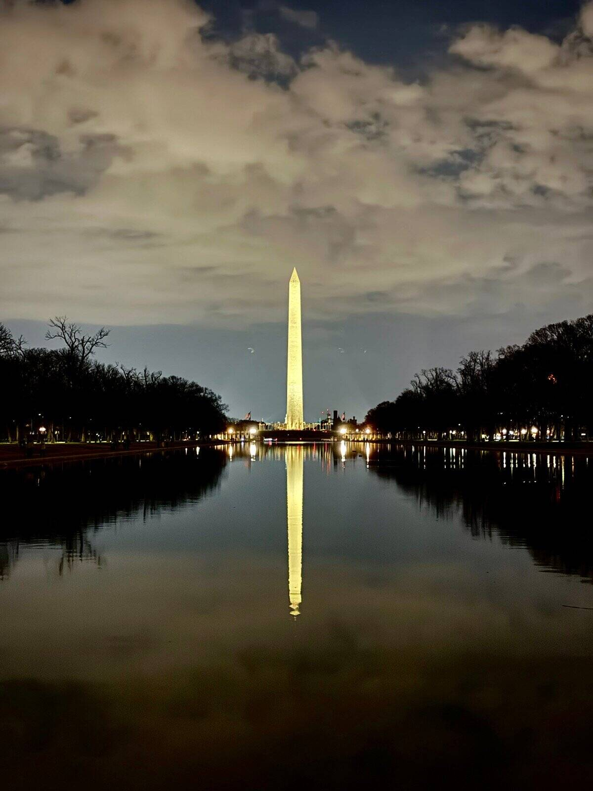
9:30 PM — Night photo stop (optional)
- Washington Monument or Tidal Basin reflections.
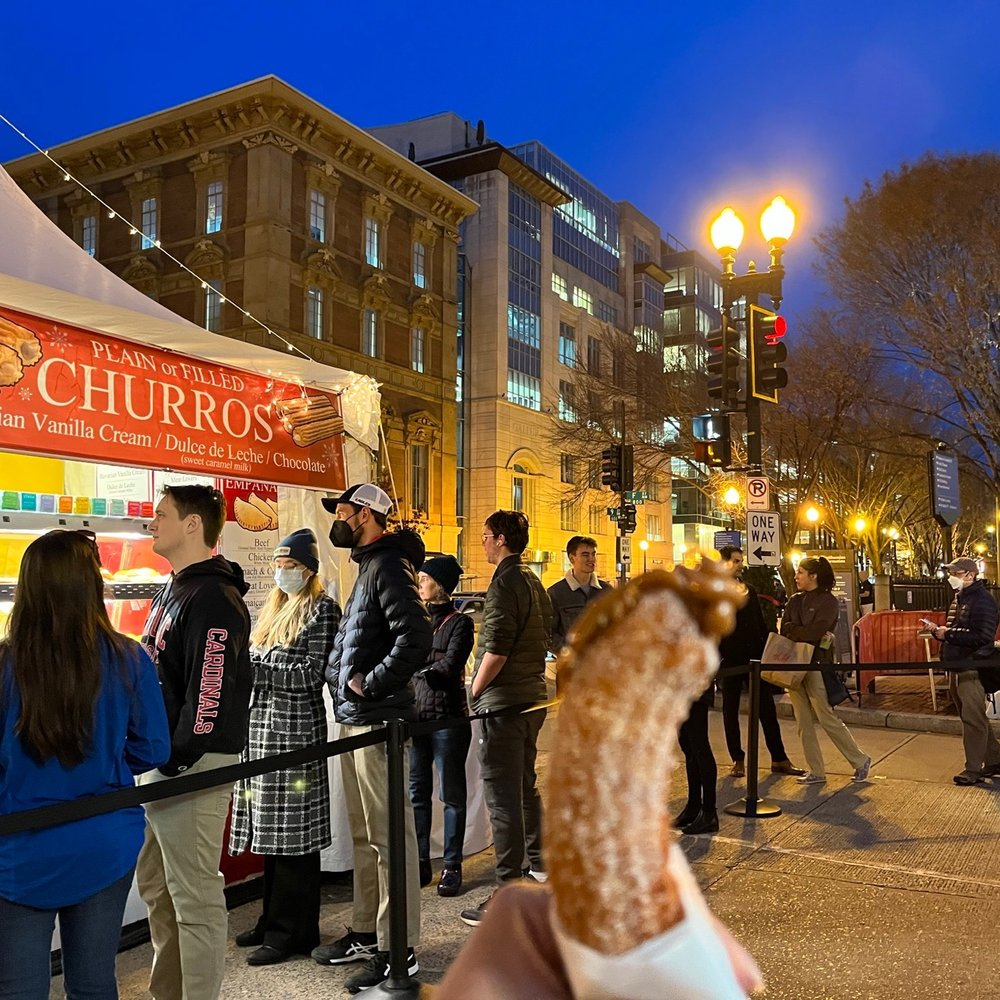
10:00 PM — Treat / Wind-down (pick 1)
- Gelato or bakery near the Mall. (Budget $)
- Rooftop view (weather permitting). (Mid $$)
- Cocoa + Metro back (if chilly).
Quick swaps (weather / crowds)
- Rainy: more museum time; use Gallery tunnels between buildings.
- Hot: reverse order — do museums mid-day, monuments at night.
- Lines: trade the 11:00 AM and 3:00 PM museum slots.